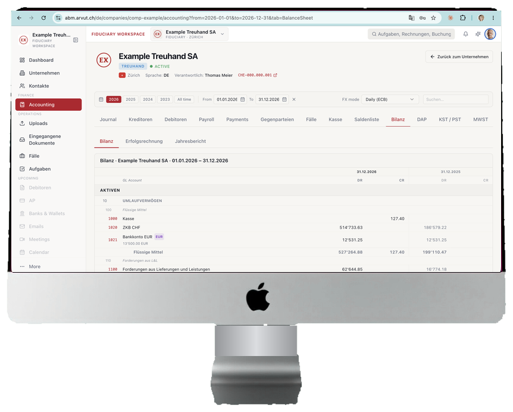

Gleiches Team.
Doppelt so viele
Mandate.
Die Buchhaltung Ihrer Mandate führt das Arvut-Team — Sie prüfen, unterschreiben und behalten den Kunden. Vertraglich: Non‑Poaching.

Kapazität, die Sie nicht einstellen müssen.
Kapazität ohne neue Stellen
Qualifizierte Buchhalterinnen und Buchhalter sind auf dem Markt kaum zu finden — und das wird so bleiben. Arvut nimmt Ihrem Team die Produktion ab: Buchungen, Abstimmungen, Deklarationsentwürfe. Ihre Mitarbeitenden prüfen, beraten und pflegen die Kundenbeziehungen. Gleiches Team — mehr Mandate.
Neue Services unter Ihrer Marke
Echtzeit-Bücher, Beleg-Inbox (E‑Mail oder Foto — und der Beleg wird zum Buchungsentwurf), Kundenportal. Alles unter Ihrer Marke und Ihrem Logo. Ihre Kunden sehen Sie, nicht uns.
Präzision unter Ihrer Kontrolle
Jede Zahl wird gegen die Quelle abgestimmt: Bankauszug, MWST-Register, Lohnabrechnung — auf den Rappen. Jede Periode geht zur Prüfung und Unterschrift an Sie. Einreichung der Deklarationen und Unterschrift der Berichte bleiben bei Ihrer Treuhand.
Wir finden, was Excel übersieht.
Die Abstimmung gegen die Quelle bringt zum Vorschein, was manuelle und Excel-Prozesse übersehen: doppelt erfasste Umsätze, verlorene MWST, Erkennungsfehler — bevor sie in die Deklaration gelangen. Mehrwährung führen wir real, mit parallelen Büchern in EUR/CHF, und Konten rekonstruieren wir bei Bedarf aus den Originalbelegen — alles auf den Rappen abgestimmt.
Die Produktion bei uns.
Die Unterschrift bei Ihnen.
Sie laden hoch. Wir produzieren. Sie unterschreiben.
Die Deklaration reicht die Treuhand ein. Die Zahlen produziert und stimmt Arvut ab.
Sie oder Ihre Kunden laden hoch
Die Belege des Mandats — wie es passt: E-Mail-Inbox, Foto, PDF-Bankauszüge. Der Kunde kann selbst über das Portal unter Ihrer Marke hochladen — das nimmt Ihnen auch das Sammeln der Belege ab. Keine Software-Einführung bei Ihnen, kein Umschulen des Teams.
Wir produzieren
Arvut-Team und ABM-Plattform: Buchungen, Kreditoren und Debitoren, Zahlungsabgleich, MWST-Deklarationsentwurf, Verbuchung der Löhne aus Ihren Lohnabrechnungen. Mit Qualitäts-Checkpoints.
Sie prüfen und unterschreiben
Entwürfe der Deklarationen und Berichte kommen zur Freigabe zu Ihnen. Unterschrift, Einreichung, Kundenkommunikation — Ihre.
Arvut ersetzt die Treuhand nicht. Arvut macht sie profitabler. Mehr zum Prozess →
Ihre Kunden bleiben Ihre Kunden.
Ihre Kunden bleiben Ihre Kunden. Non‑Poaching ist vertraglich verankert; für den Endkunden ist Arvut unsichtbar.
Die Daten sind in der Schweiz gehostet. Mandate sind voneinander isoliert; Belege werden 10 Jahre aufbewahrt (OR 958f).
90 Tage auf echten Büchern.
Wählen Sie ein bis zwei Mandate. Wir führen die Bücher, Sie prüfen jede Zahl. Die Entscheidung über die Fortsetzung fällt, nachdem Sie die Qualität auf den eigenen Daten gesehen haben.